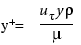
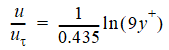
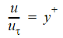

Near Wall Treatment
The boundary layer is a very complex region of high velocity gradient and diffusion dominated development. To model it precisely would necessitate an extremely fine grid. An empirical relationship is therefore used to describe the shape of the boundary layer so that only one grid cell near the wall is required. This empirical relationship describes the shape of the boundary layer in non-dimensional terms. Two non-dimensional terms are formulated. These are the friction velocity:
 | (1) |
|---|
and a non-dimensionalized distance from the wall (which can be viewed as a local Reynolds number):
|  | (2) |
|---|
These formulae are based upon the well-established ‘universal’ relationships:
For y+ > 11.5 (turbulent):
 | (3) |
|---|
For y+ < 11.5 (laminar):
 | (4) |
|---|
All that is required to deduce the wall shear stress from the near wall velocity is therefore the distance from the near wall cell center to the wall itself. Variation of the eddy viscosity itself in the wall boundary layer is deduced from similar relationships.